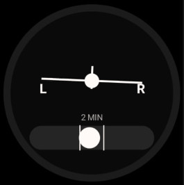
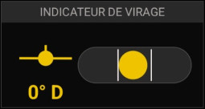

⚖
Bille / Indicateur de virage
Inclinaison · bille de dérapage
ANLSLP · analogique
NUMSLP · numérique (50%-1L)


Possibilités
- Affiche l'inclinaison (avion incliné).
- Bille de dérapage.
Gestes
– Appui long : —
·· Double-tap : —